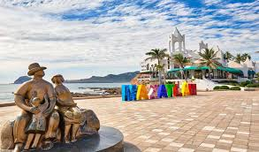

La ciudad fue fundada un 14 de mayo de 1531 por 25 castellanos enviados por don Nuño de Guzmán, posterior a la fundación de la ciudad de Culiacán. Hoy en día este destino turístico, lugar de templada temperatura ubicado a 21 kilómetros del Trópico de Cáncer, colindante al poniente con el gran litoral del Océano Pacífico, se ha desarrollado al paso de los años a través de nuevas colonias y fraccionamientos, así como con interesantes complejos turísticos en donde destaca una sólida infraestructura. Es "La Perla del Pacífico", cuya zona costera despliega fabulosas playas a lo largo de 17 kilómetros, haciendo de esta una de las zonas más extensas del mundo
